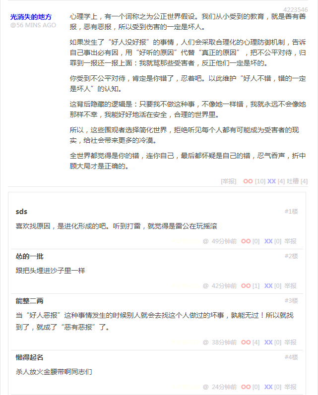
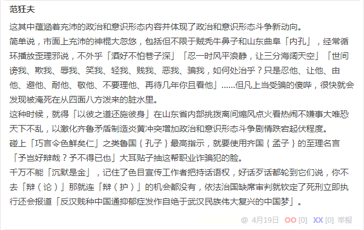

段子 4223546
心理学上，有一个词称之为公正世界假设。我们从小受到的教育，就是善有善报，恶有恶报，所以受到伤害的一定是坏人。
如果发生了“好人没好报”的事情，人们会采取合理化的心理防御机制，告诉自己事出必有因，用“好听的原因”代替“真正的原因”，把不公平对待，归罪到一报还一报上面：我就骂那些受害者，反正他们一定是坏的。
你受到不公平对待，肯定是你错了，忍着吧。以此维护“好人不错，错的一定是坏人”的认知。
这背后隐藏的逻辑是：只要我不做这种事，不像她一样错，我就永远不会像她那样不幸，我能好好地活在安全，合理的世界里。
所以，这些围观者选择简化世界，拒绝听见每个人都有可能成为受害者的现实，给社会带来更多的冷漠。
全世界都觉得是你的错，连你自己，最后都怀疑是自己的错，忍气吞声，折中顾大局才是正确的。
喜欢找原因，是进化形成的吧。听到打雷，就觉得是雷公在玩摇滚
跟把头埋进沙子里一样
当“好人恶报”这种事情发生的时候别人就会去找这个人做过的坏事，孰能无过！所以就找到了，就成了“恶有恶报”了。
杀人放火金腰带啊同志们
这其中蕴涵着充沛的政治和意识形态内容并体现了政治和意识形态斗争新动向。
简单说，市面上充沛的神棍大忽悠，包括但不限于贼秃牛鼻子和山东曲阜「内孔」，经常循环播放歪理邪说，不外乎「酒好不怕巷子深」「忍一时风平浪静，让三分海阔天空」「世间谤我、欺我、辱我、笑我、轻我、贱我、恶我、骗我，如何处治乎？只是忍他、让他、由他、避他、耐他、敬他、不要理他、再待几年你且看他」……但凡上当受骗的傻哔，很快就会发现被淹死在从四面八方泼来的脏水里。
这种时候，就得「以彼之道还施彼身」在山东省内部挑拨离间煽风点火看热闹不嫌事大唯恐天下不乱，以激化齐鲁矛盾制造炎黄冲突增加政治和意识形态斗争剧情跌宕起伏程度。
碰上「巧言令色鲜矣仁」之类鲁国孔子最高指示，就要使用齐国孟子的至理名言「予岂好辩哉？予不得已也」大耳贴子抽这帮职业诈骗犯的脸。
千万不能「沉默是金」，记住了色目宣传工作者把持话语权，好话歹话都轮到它们说，你不去「辩（论）」那就连「辩（护）」的机会都没有，依法治国缺席审判就钦定了死刑立即执行还会报道「反汉贱种中国通抑郁症发作自绝于武汉民族伟大复兴的中国梦」。
补充
面对色目干部的颠倒黑白混淆是非造谣污蔑栽赃陷害倒打一耙贼喊捉贼，首先要坚持抗战不动摇，在被动挨打的「战略防御」阶段的主要任务是收集情报，色目宣传工作者不打自招爆料的国家机密兼宇宙奥秘极大充沛。哪怕被24×7盯着无法做到「好记性不如烂笔头」，也得不动声色的记住大概出处和主要参与者，在贝叶斯方法论指导下进行聚类分析逐步更新结论。
当色目干部及其背后赞助商所代表的幕后黑手之丑恶嘴脸逐步清晰之后，进入了「战略相持」阶段。这时候就应该针锋相对见招拆招，不仅自己发言要「无一字无来历」，对于色目宣传工作者也要高标准严要求，不惮以最大的恶意揣测其中蕴涵的充沛政治和意识形态内容，大胆假设幕后黑手的阴谋诡计并从字里行间小心求证。主要防守原则是「干扰对方战略布局、阻挠对方战术执行、逼迫对方临时更改方案、提高对方运作成本、降低对方事业成功率」。
在利用「主动雷达探测」都无法获得深度追踪报道之情报的时候，判断色目干部战争潜力已经动员到极限，于是只能声嘶力竭循环播放歪理邪说以对得起境外赞助商的广告费，这时候就到了「战略反攻」阶段。要全方位全天候在全部力所能及的领域，在防守上继续坚持原则，在进攻上则需要「兵无常势水无常形」多视角多层次尽量造成对方损失，使得对方长期利益和短期利益难以兼顾，再瞅准每一次每一处青黄不接的破绽「半渡而击」之。